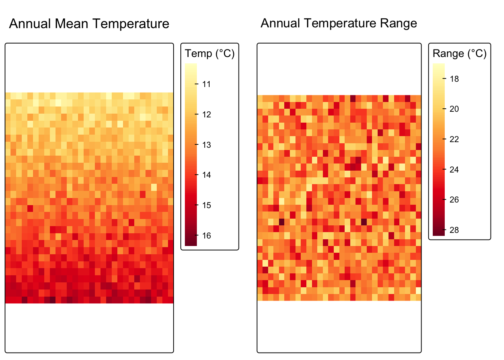
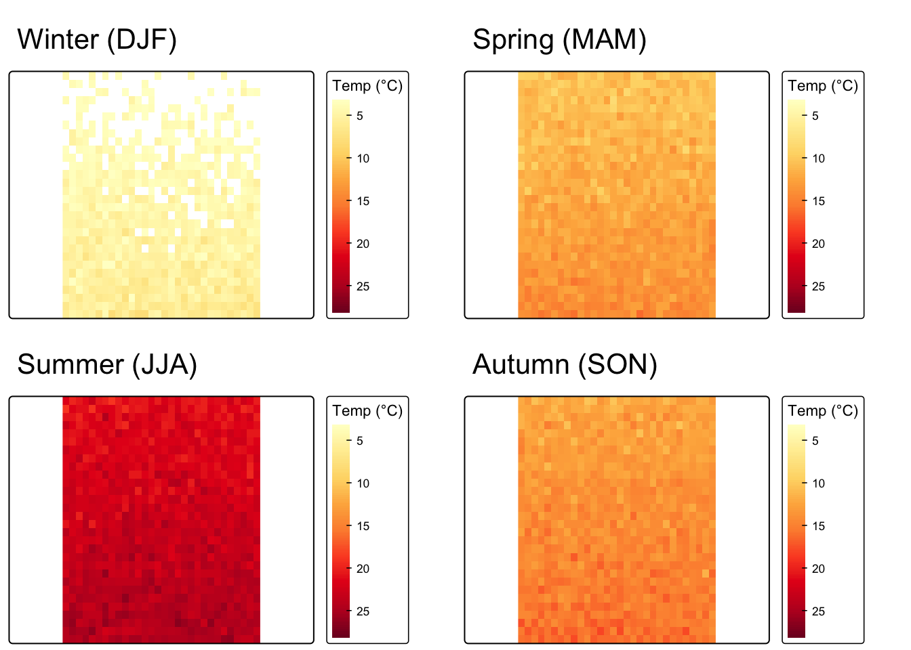
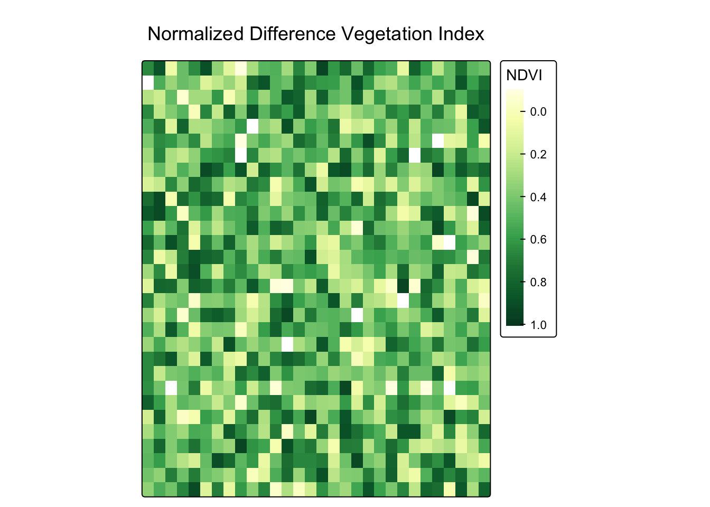

library(terra)
library(tmap)
NoteOverview
When working with multi-layer rasters, we often need to apply a function across layers to summarize or combine them. The terra package provides three key functions for this:
app()applies a function to each cell using all layers as input, returning a single summary layertapp()extendsapp()by applying a function to user-defined subsets (groups) of layerslapp()applies a function where each layer is passed as a separate positional argument, enabling formulas that treat layers differently
In this review we use two synthetic datasets — monthly temperature layers and a two-band reflectance raster — to explore each function.
Setup
Create Example Data
Monthly temperature stack
We simulate 12 layers of monthly mean temperature (°C) over a 30 × 30 grid representing a generic mid-latitude region. Each layer corresponds to one calendar month.
set.seed(42)
# Spatial template
template <- rast(nrow = 30, ncol = 30,
xmin = -124, xmax = -114,
ymin = 32, ymax = 42,
crs = "EPSG:4326")
# Typical monthly means (°C) — cool winters, warm summers
monthly_means <- c(5, 7, 10, 14, 18, 22, 26, 26, 22, 16, 10, 6)
monthly_temp <- rast(lapply(seq_along(monthly_means), function(i) {
r <- template
lat <- init(r, "y") # north–south gradient
noise <- rast(template)
values(noise) <- rnorm(ncell(r), 0, 1.5)
values(r) <- monthly_means[i] - 0.4 * (values(lat) - 32) + values(noise)
r
}))
names(monthly_temp) <- month.abb
monthly_tempclass : SpatRaster
size : 30, 30, 12 (nrow, ncol, nlyr)
resolution : 0.3333333, 0.3333333 (x, y)
extent : -124, -114, 32, 42 (xmin, xmax, ymin, ymax)
coord. ref. : lon/lat WGS 84 (EPSG:4326)
source(s) : memory
names : Jan, Feb, Mar, Apr, May, Jun, ...
min values : -3.289635, -1.724275, 2.612132, 6.228076, 10.29151, 14.27293, ...
max values : 9.483465, 11.776989, 13.674883, 17.678095, 22.28335, 26.47197, ... Two-band reflectance raster
We also simulate a two-band raster with a red and a near-infrared (NIR) reflectance layer, mimicking what a satellite sensor would record over a landscape.
red_nir <- rast(template, nlyrs = 2)
values(red_nir) <- cbind(
runif(ncell(template), 0.02, 0.25), # red band
runif(ncell(template), 0.15, 0.60) # NIR band
)
names(red_nir) <- c("red", "nir")
red_nirclass : SpatRaster
size : 30, 30, 2 (nrow, ncol, nlyr)
resolution : 0.3333333, 0.3333333 (x, y)
extent : -124, -114, 32, 42 (xmin, xmax, ymin, ymax)
coord. ref. : lon/lat WGS 84 (EPSG:4326)
source(s) : memory
names : red, nir
min values : 0.02014154, 0.1526077
max values : 0.24954428, 0.5995263 app(): Summarize Across All Layers
app() applies a function to every cell in the raster, passing a vector of all layer values for that cell to fun. The result collapses the stack into one (or more) output layers.
Question: What is the annual mean temperature, and how large is the annual temperature swing at each location?
annual_mean <- app(monthly_temp, fun = mean)
names(annual_mean) <- "annual_mean_temp"fun can return a vector to produce multiple output layers in a single call:
annual_stats <- app(monthly_temp, fun = function(x) {
c(mean = mean(x),
range = max(x) - min(x))
})
names(annual_stats) <- c("mean_temp", "temp_range")
annual_statsclass : SpatRaster
size : 30, 30, 2 (nrow, ncol, nlyr)
resolution : 0.3333333, 0.3333333 (x, y)
extent : -124, -114, 32, 42 (xmin, xmax, ymin, ymax)
coord. ref. : lon/lat WGS 84 (EPSG:4326)
source(s) : memory
names : mean_temp, temp_range
min values : 10.29811, 17.08657
max values : 16.32202, 28.37562 map_mean <- tm_shape(annual_stats[["mean_temp"]]) +
tm_raster(
col.scale = tm_scale_continuous(values = "brewer.yl_or_rd"),
col.legend = tm_legend("Temp (°C)", position = tm_pos_out("right", "center"))
) +
tm_title("Annual Mean Temperature")
map_range <- tm_shape(annual_stats[["temp_range"]]) +
tm_raster(
col.scale = tm_scale_continuous(values = "brewer.yl_or_rd"),
col.legend = tm_legend("Range (°C)", position = tm_pos_out("right", "center"))
) +
tm_title("Annual Temperature Range")
tmap_arrange(map_mean, map_range, nrow = 1)
Tip
app() is the right tool whenever your summary treats all layers the same way — mean, max, standard deviation, custom reducer — and you want one value per cell.
tapp(): Summarize Subsets of Layers
tapp() is a grouped version of app(). An index vector assigns each layer to a group; the function is then applied independently within each group.
Question: What is the mean temperature in each meteorological season?
We assign all 12 monthly layers to one of four seasons:
| Season | Months |
|---|---|
| DJF (winter) | December, January, February |
| MAM (spring) | March, April, May |
| JJA (summer) | June, July, August |
| SON (autumn) | September, October, November |
# One label per layer, in layer order (Jan … Dec)
season_index <- c(
"DJF", "DJF", # Jan, Feb
"MAM", "MAM", "MAM", # Mar, Apr, May
"JJA", "JJA", "JJA", # Jun, Jul, Aug
"SON", "SON", "SON", # Sep, Oct, Nov
"DJF" # Dec
)
seasonal_mean <- tapp(monthly_temp, index = season_index, fun = mean)
seasonal_meanclass : SpatRaster
size : 30, 30, 4 (nrow, ncol, nlyr)
resolution : 0.3333333, 0.3333333 (x, y)
extent : -124, -114, 32, 42 (xmin, xmax, ymin, ymax)
coord. ref. : lon/lat WGS 84 (EPSG:4326)
source(s) : memory
names : DJF, MAM, JJA, SON
min values : 0.007980745, 8.077542, 18.64333, 10.15550
max values : 7.893429566, 16.153415, 26.26686, 17.81484 Each output layer is named after its group. We can access individual seasons by name:
seasonal_mean[["JJA"]]class : SpatRaster
size : 30, 30, 1 (nrow, ncol, nlyr)
resolution : 0.3333333, 0.3333333 (x, y)
extent : -124, -114, 32, 42 (xmin, xmax, ymin, ymax)
coord. ref. : lon/lat WGS 84 (EPSG:4326)
source(s) : memory
name : JJA
min value : 18.64333
max value : 26.26686 Visualizing the four seasonal means side by side:
season_labels <- c("Winter (DJF)", "Spring (MAM)", "Summer (JJA)", "Autumn (SON)")
season_keys <- c("DJF", "MAM", "JJA", "SON")
maps <- lapply(seq_along(season_keys), function(i) {
tm_shape(seasonal_mean[[season_keys[i]]]) +
tm_raster(
col.scale = tm_scale_continuous(values = "brewer.yl_or_rd",
limits = c(3, 28)),
col.legend = tm_legend("Temp (°C)", position = tm_pos_out("right", "center"))
) +
tm_title(season_labels[i])
})
tmap_arrange(maps[[1]], maps[[2]], maps[[3]], maps[[4]], nrow = 2)
Tip
tapp() is the right tool when your layers have a natural grouping — seasons, years, land-cover classes — and you want one summary layer per group rather than one summary across everything.
lapp(): Apply a Formula Using Layers as Arguments
lapp() also sweeps a function across cells, but it passes each layer to fun as a separate positional argument rather than as a single vector. This matters when the function needs to distinguish layers by role — for example, band 1 is always “red” and band 2 is always “NIR”.
Question: What is the Normalized Difference Vegetation Index (NDVI) for each cell?
NDVI is computed from the red and NIR reflectance bands:
\[NDVI = \frac{NIR - Red}{NIR + Red}\]
Because the formula treats the two bands asymmetrically, lapp() is the natural choice: the first argument maps to the first layer (red) and the second argument maps to the second layer (nir).
ndvi <- lapp(red_nir, fun = function(red, nir) (nir - red) / (nir + red))
names(ndvi) <- "NDVI"
ndviclass : SpatRaster
size : 30, 30, 1 (nrow, ncol, nlyr)
resolution : 0.3333333, 0.3333333 (x, y)
extent : -124, -114, 32, 42 (xmin, xmax, ymin, ymax)
coord. ref. : lon/lat WGS 84 (EPSG:4326)
source(s) : memory
name : NDVI
min value : -0.1857236
max value : 0.9304008 tm_shape(ndvi) +
tm_raster(
col.scale = tm_scale_continuous(values = "brewer.yl_gn",
limits = c(-0.1, 1)),
col.legend = tm_legend("NDVI", position = tm_pos_out("right", "center"))
) +
tm_title("Normalized Difference Vegetation Index")
Tip
lapp() is the right tool when your function has a formula where each layer plays a named role — spectral indices (NDVI, EVI, NDWI), physics-based models, or any case where swapping layer order would give a wrong result.
Summary: Choosing the Right Function
| Function | Input | fun receives |
Use when… |
|---|---|---|---|
app() |
one raster stack | vector of all layer values | summarizing all layers the same way |
tapp() |
one raster stack + group index | vector of layer values within a group | computing one summary per labeled group |
lapp() |
one raster stack | each layer as a separate argument | applying a formula that treats layers differently |